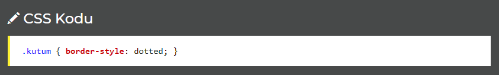
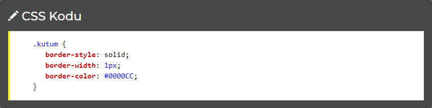
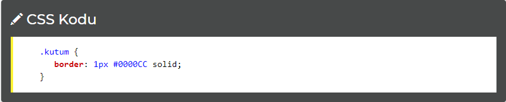

CSS Kenarlıklar (Border)
Bir HTML elementinin kenarlarına çizgi çekerken kullanacağımız kodlar şunlardır:
<
border-style
border-width
border-color
Ayrıca bunlarla birlikte şu konularda da bilgi vereceğiz:
Kenarları ayrı ayrı şekillendirmek
Kenarlık kullanımının kısa yolu
border-style: Kenarlık Stili
Kenarların görünüşünün nasıl olacağı ile ilgili bilgi vermemizi sağlar.
Kullanabileceğiniz stiller:
none - Kenarlık yok
dotted - Noktalı
dashed - Kesik çizgili
solid - Çizgi
double - Çift çizgi
groove
ridge
inset
outset
Örnek bir kullanım:

border-color: Kenarlık Rengi
Kenarlık rengini bu komutla değiştirebiliriz. ÖNCELİKLE MUTLAKA
border-style belirtmemiz gerekir, aksi takdirde görüntülenmeyecektir.
Örnek bir kullanım:

Kenarları Ayrı Ayrı Şekillendirmek
İstiyorsak yukarı (top), aşağı (bottom), sağ (right) ve sol (left) kenarları ayrı ayrı biçimlendirebiliriz.
border-left-style - Sol kenarın şekli.
border-right-style - Sağ kenarın şekli.
border-top-style - Üst kenarın şekli.
border-bottom-style - Alt kenarın şekli.
Ayrıca border-style dört kenarın değerini de alacak şekilde yazılabilir. Örneğin:
border-style: dotted solid double dashed;
Üst kenar - dotted,
Sağ kenar - solid,
Alt kenar - double,
Sol kenar - dashed.
Farkettiyseniz border-style yazdıktan sonra sırasıyla saat yönünde kenarları ayrı ayrı belirttik.
border-style: dotted solid double;
Üst kenar - dotted,
Sağ ve Sol kenar - solid,
Alt kenar - double,
Bu kullanımda 4. kenarı yazmadık. Bu kenar solu işaret ettiği için tam tersi olan Sağ taraftaki özelliği alacaktır.
border-style: dotted solid;
Üst kenar ve alt kenar - dotted,
Sağ ve Sol kenar - solid,
Bu kullanımda Yukarı - Aşağı kenarlar ilk yazılan dotted, Sol ve Sağ kenarlar ikinci yazılan solid biçiminde olacaktır.
Kenar Belirtmenin Kısa Yolu
Sadece border kullanarak da
border-width, border-color ve border-style değerlerini belirtmemiz mümkün. Örneğe bakalım:

Sırasıyla önce border-width değerini yazdık, sonra border-color ve en son border-style ile üç özelliği birlikte kullandık.
Bu kısayolu da kenarlara ayrı ayrı uygulamanız mümkün. Bu komutlar:
border-left - Sol kenar
border-right - Sağ kenar
border-top - Üst kenar
border-bottom - Alt kenar